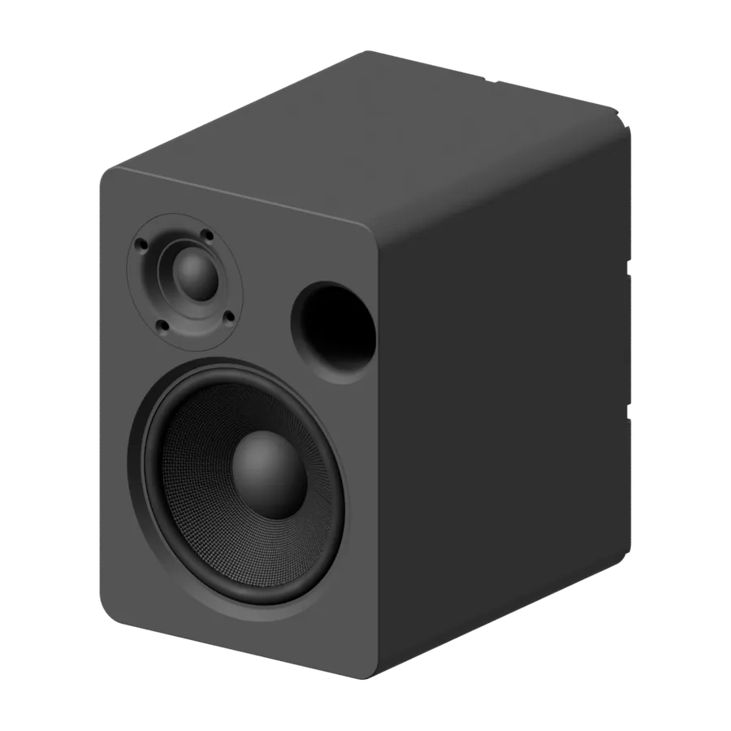
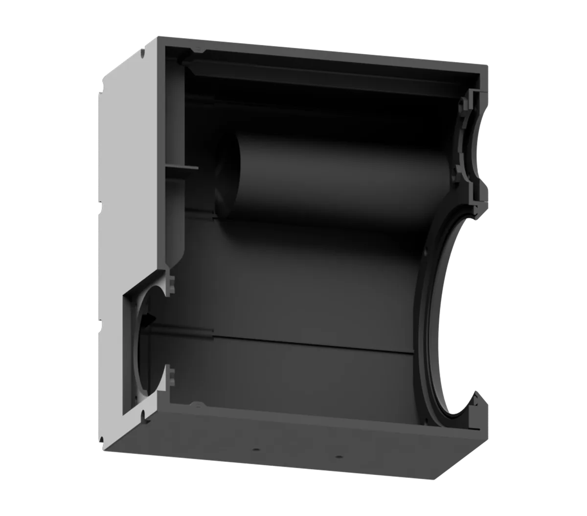
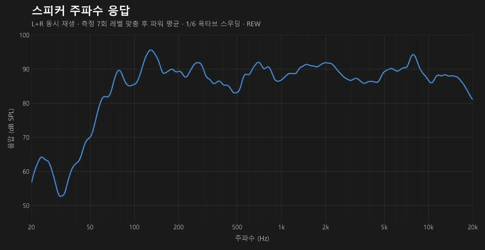
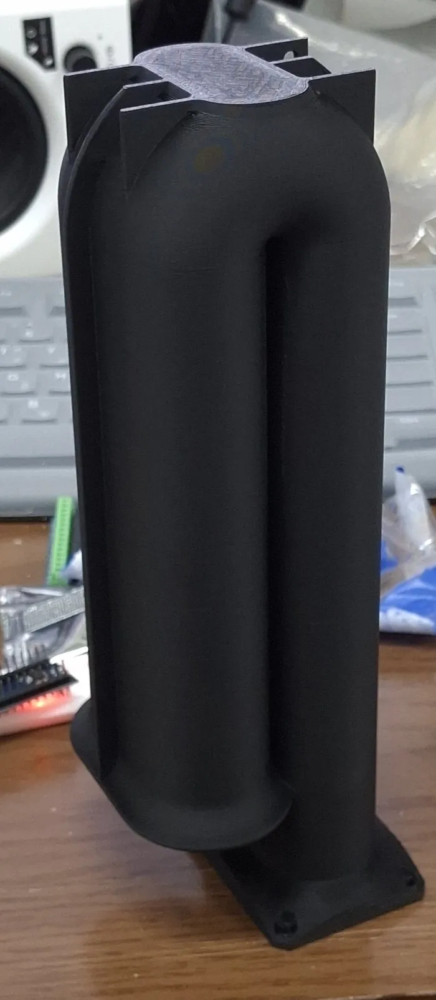
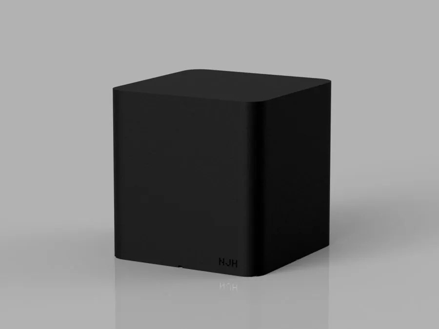
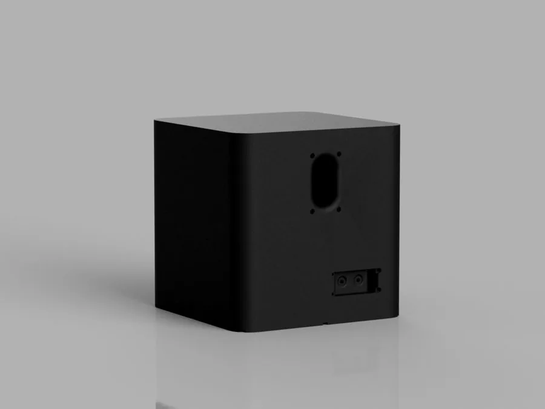

DIY Speakers
1.5만 원 드라이버로
만든 스피커
4인치 우퍼와 트위터로 만든 2-way 스피커입니다. 출력한 인클로저의 공진과 휨을 잡고, 포트를 계산해 저음을 맞췄습니다. 지금까지 8개 버전입니다.

4인치 우퍼와 트위터로 만든 2-way 스피커입니다. 출력한 인클로저의 공진과 휨을 잡고, 포트를 계산해 저음을 맞췄습니다. 지금까지 8개 버전입니다.
인클로저는 전부 출력했습니다. 크기 상한은 프린터(X1CC, P1S)의 출력 공간이었습니다.
국산 4인치 우퍼(삼미 CW-100B25, 약 8,500원)와 약 7,000원짜리 트위터를 썼습니다.
인클로저는 전부 3D 프린팅입니다. 버전마다 새로 설계해 출력했습니다.
우퍼와 트위터를 나누는 크로스오버는 시판 회로를 사서 썼습니다.
출력한 인클로저는 벽이 얇고 가벼워서, 소리를 내는 동안 같이 떨립니다. 저음을 내려면 내부 용적과 포트도 맞아야 합니다. 8개 버전 동안 가장 오래 붙잡은 부분입니다.


인클로저가 울리면 소리가 탁해집니다. 벽이 따라 떨리지 않게 구조를 바꿔 가며 공진을 잡았습니다.
인클로저 안을 흡음재로 가득 채워, 안에서 튕기는 소리와 울림을 줄였습니다.
WinISD로 내부 용적(약 1.7~4.7L)와 포트 튜닝(70~90Hz)을 버전마다 다시 계산했습니다.
출력물은 힘을 받으면 휩니다. 안쪽을 리브로 짜서 휨 강성을 높이고, 3D 프린팅을 고려해 서포터가 하나도 필요 없게 설계했습니다.
REW로 듣는 자리 주변 7곳을 재 평균을 냈습니다. 계산상 78Hz였던 저역 한계는 방에서 약 65Hz까지 내려갔습니다.
보정 전 응답은 약 ±7dB 범위에서 오르내렸습니다.

룸 EQ 전 측정. 7지점 파워 평균, 1/6 옥타브 스무딩, REW
처음 EQ는 필터 18개로 곡선을 억지로 폈습니다. 필터 하나로 20dB 넘게 깎거나 9dB를 올리기도 했습니다.
하지만 크게 올리면 앰프 여유가 줄어 왜곡이 늘고, 좁고 깊은 보정은 마이크 위치에서만 맞습니다. 지금 EQ는 필터 4개, 최대 9.7dB입니다. 크게 튀는 곳만 고칩니다.
두 EQ 설정의 필터 값으로 계산한 보정량입니다(측정 응답 아님).
4인치가 못 내는 저음을 맡을 포트형 서브우퍼입니다. 하우징 출력과 부품 준비는 끝났고, 뚜껑과 조립만 남았습니다.



긴 포트를 작은 인클로저 안에 넣으려고 U자로 접어 출력했습니다.
8개 버전을 거치며 하우징의 휨과 공진, 3D 프린팅 출력 특성, 포트의 공기 흐름, 놓일 공간까지 하나씩 익혔습니다.